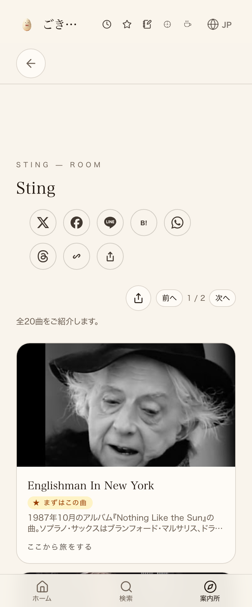
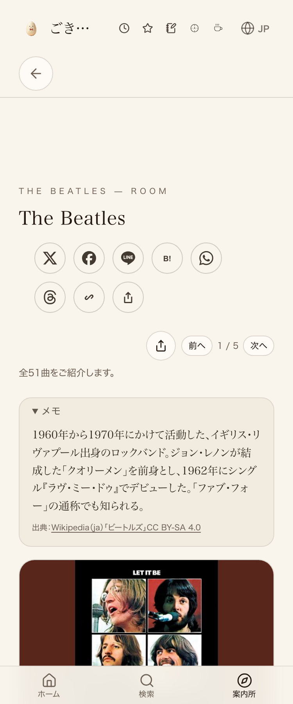

Sting本番(検品前)
Sting本番(検品後)

Beatles本番(検品前)
Beatles本番(検品後)

.claude/manuals/01-ingest-linking.mdに階層別上限ルール（世界的超大物=上限50=ビートルズ・美空ひばり、大物=20〜30=スティング・中森明菜）を確定済み。本番のStingページ(11曲・大物カテゴリの上限内)・Beatlesページをverify_click.mjsで再検証し、押しても無反応な要素0件・コンソールエラー0件でPASS。Stingデータ内にあった孤立したカンマ・空行6行も削除し、本番へ反映済み。


| 確認項目 | 結果 |
|---|---|
| Sting本番ページが200で返る | yes |
| Sting本番ページにFields of Goldが実在 | yes |
| Beatles本番ページが200で返る | yes |
| Beatles本番ページにLet It Beが実在 | yes |
| verify_click.mjs: Sting押しても無反応0件・コンソールエラー0件 | yes |
| verify_click.mjs: Beatles押しても無反応0件・コンソールエラー0件 | yes |